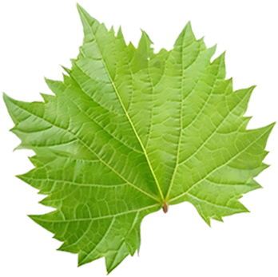
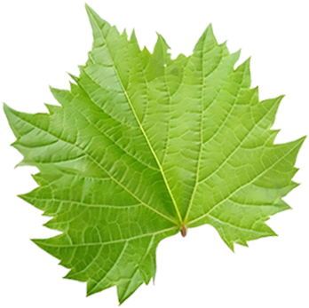
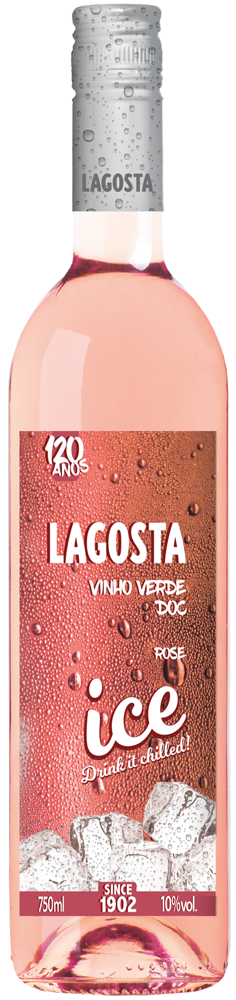

Lagosta Origens
Loureiro Traz a alma da região dos vinhos verdes à tua mesa.  A nova coleção de monovarietais, Lagosta Origens, explora as melhores castas do terroir de Vinhos Verdes e, num regresso às origens, eleva ao máximo a personalidade de cada casta da região.
Loureiro Traz a alma da região dos vinhos verdes à tua mesa.  A nova coleção de monovarietais, Lagosta Origens, explora as melhores castas do terroir de Vinhos Verdes e, num regresso às origens, eleva ao máximo a personalidade de cada casta da região.
"Com o Lagosta Origens Loreiro, as características peculiares
desta casta estão evidenciadas no vinho, tornando-o gastronómico,
complexo e com elevada capacidade de envelhecimento."
Nuno Faria, enólogo da Enoport Wines, detentora da marda
Lagosta.
Lagosta Origens Loureiro apresenta um aroma elegante com nuances
florais. De sabor fresco e encorporado com notas de especiarias,
possui uma excelente acidez com final de boca prolongado.
Versátil na gastronomia, acompanha pratos de peixe grelhado,
marisco e carnes brancas.
Lagosta Vinho Verde Doc
A marca Portuguesa mais antiga de Vinho Verde, registada desde
1902, Exclusiva na produção de Vinhos Verdes DOC.
Reinventou-se, em 2018, ao lançar a edição ICE, branco e rosé,
reforçando o seu posicionamento junto aos apaixonados de vinho
verde, seduzindo pelo excelente equilíbrio entre a acidez e a
doçura.
Com o lançamento do Lagosta Origens Loureiro amplia a sua oferta
para seduzir os verdadeiros apreciadores dos monovarietais de
Vinho verde e demonstra que consegue aliar jovialidade e expertise
e demonstrar, uma vez mais, toda a sua logevidade.

Lagosta
Vinho Verde DOC
Branco

Lagosta
Vinho Verde DOC
Rosé

Lagosta ICE
Vinho Verde DOC
Branco

Lagosta ICE
Vinho Verde DOC
Rosé

Lagosta Origens
Loureiro V.V. DOC
Branco
Quinta da Devesa
Produzido na Quinta da Devesa, localizada no coração do Vinho
Verde, possui uma magnífica vista sobre a cidade de
Amarante.
Com 16 hectares de vinha, cultivamos, em treliças, as castas
características da região de Vinhos Verdes: Loureiro, Alvarinho,
Arinto, Trajadura, Azal, entre outras, com a importante atenção em
cuidar das nossas pessoas, respeitar nosso meio ambiente e zelar
pelo nosso futuro.
A região de Vinhos Verdes
A região de Vinhos Verdes é única no mundo. A norte de portugal,
é a maior Região Demarcada Portuguesa e uma das maiores da
Europa.
Possui uma vegetação exuberante que se estende desde os picos das
montanhas até ao mar e suas diferenças climáticas refletem nos
diferentes estilos de vinhos que a região proporciona: desde os
vinhos verdes jovens, frescos, leves e com baixo teor alcoólico
aos vinhos verdes mais sofisticados, com aromas e sabores
complexos, intensos e minerais e com grande potencial de
guarda.